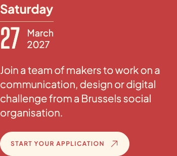
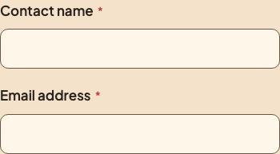

Keuze 1 van 2
Welke organisaties mogen aanvragen?
Nu noemt de organisatiepagina alleen mensen in Brussel. De briefing voor 2027 gaat over jongeren van ongeveer 12 tot 25 jaar. Moet dat een voorwaarde zijn, of een voorkeur?
Nu op de site
Intro op de organisatiepagina

Vraag in het aanvraagformulier

Het voorstel
Jongerenwerk als voorwaarde

Vraag in het aanvraagformulier

Klik op de andere optie om die tekst te zien. Dit zijn voorstellen; de publieke site is nog niet aangepast.
Vier correcties die ik aanraad.
Hieronder zie je steeds het effect. De vier correcties staan voorgeselecteerd; zet een vinkje uit als je iets wilt behouden.
Maak kleine tekst op rood iets lichter.
De huidige cream is net te donker voor deze tekstgrootte. Het voorstel gebruikt de lichtere cream die al in de site zit.
Nu
 Nu: datum en uitleg in Paper Cream.
Nu: datum en uitleg in Paper Cream.Voorstel

Voorstel: dezelfde tekst in Paper Cream Light.Contrast 4,04:1 → 4,78:1
Geef invoervelden een duidelijkere rand.
Nu is moeilijk te zien waar een leeg veld eindigt. Het voorstel gebruikt een dunne rand in de bestaande bruine inktkleur.
Nu
 Nu: de veldrand valt bijna weg.
Nu: de veldrand valt bijna weg.Voorstel

Voorstel: dezelfde velden met een zichtbare rand.Veldrand tegen pagina 1,33:1 → 5,46:1
Wat blijft er na deze review nog te regelen?
Daarna volgen de productiechecks: mailaflevering, echte beheerdersaccounts, opvolging van aanvragen, fototoestemming, back-ups en bewaartermijnen. Vier verouderde testverwachtingen moeten ook worden bijgewerkt.
Open het volledige technische auditrapport